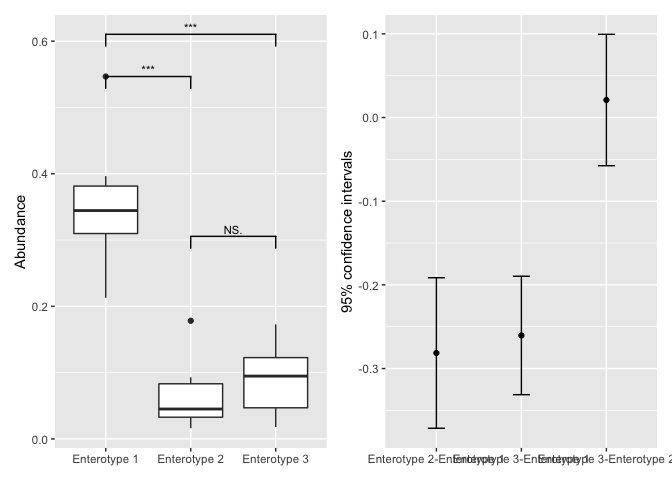

If you think this project is helpful to you, you can give this project a star ⭐
Motivation
The aim of this package is to build a unified toolbox in R for mcirobiome biomarker discovery by integrating various existing methods.
Many statistical methods have been proposed to discovery the microbiome biomaker by compare the taxon abundance between different classes. Some methods developed specifically for microbial community, such as linear discriminant analysis (LDA) effect size (LEfSe) (Segata et al. 2011), metagenomeSeq (Paulson et al. 2013); and some methods developed specifically for RNA-Seq data, such as DESeq2 (Love, Huber, and Anders 2014) and edgeR (Robinson, McCarthy, and Smyth 2009), have been proposed for microbiome biomarker discovery. We usually use several methods for microbiome biomarker discovery and compare the results, which requires multiple tools developed in different programming, even in different OS.
microbiomeMarker take the phyloseq-class object in package phyloseq as input, since phyloseq is the most popular R package in microbiome analysis and with phyloseq you can easily import taxon abundance and phylogenetic tree of taxon output from common microbiome bioinformatics platforms, such as DADA2 and qiime2.
Citation
Kindly cite as follows: Yang Cao (2020). microbiomeMarker: microbiome biomarker analysis. R package version 0.0.1.9000. https://github.com/yiluheihei/microbiomeMarker. DOI: 10.5281/zenodo.3749415.
Publications citing microbiomeMarker
- Shanmugam G, Lee SH, Jeon J. EzMAP: Easy Microbiome Analysis Platform. BMC bioinformatics. 2021 Dec;22(1):1-0
- Altaib H, Nakamura K, Abe M, Badr Y, Yanase E, Nomura I, Suzuki T. Differences in the concentration of the fecal neurotransmitters GABA and glutamate are associated with microbial composition among healthy human subjects. Microorganisms. 2021 Feb;9(2):378
- Ingham AC, Kielsen K, Mordhorst H, Ifversen M, Aarestrup FM, Müller KG, Pamp SJ. Microbiota long-term dynamics and prediction of acute graft-versus-host-disease in pediatric allogeneic stem cell transplantation. medRxiv. 2021 Jan 1
- Künstner A, Aherrahrou R, Hirose M, Bruse P, Ibrahim SM, Busch H, Erdmann J, Aherrahrou Z. Effect of Differences in the Microbiome of Cyp17a1-Deficient Mice on Atherosclerotic Background. Cells. 2021 Jun;10(6):1292
Installation
You can install the package directly from github
if (!require(remotes)) install.packages("remotes")
remotes::install_github("yiluheihei/microbiomeMarker")Data import
Since phyloseq objects are a great data-standard for microbiome data in R, the core functions in microbiomeMarker take phylosq object as input. Conveniently, microbiomeMarker provides features to import external data files form two common tools of microbiome analysis, qiime2 and dada2.
Import from dada2
The output of the dada2 pipeline is a feature table of amplicon sequence variants (an ASV table): A matrix with rows corresponding to samples and columns to ASVs, in which the value of each entry is the number of times that ASV was observed in that sample. This table is analogous to the traditional OTU table. Conveniently, taxa names are saved as
library(microbiomeMarker)
seq_tab <- readRDS(system.file("extdata", "dada2_seqtab.rds",
package= "microbiomeMarker"))
tax_tab <- readRDS(system.file("extdata", "dada2_taxtab.rds",
package= "microbiomeMarker"))
sam_tab <- read.table(system.file("extdata", "dada2_samdata.txt",
package= "microbiomeMarker"), sep = "\t", header = TRUE, row.names = 1)
ps <- import_dada2(seq_tab = seq_tab, tax_tab = tax_tab, sam_tab = sam_tab)
ps
#> phyloseq-class experiment-level object
#> otu_table() OTU Table: [ 232 taxa and 20 samples ]
#> sample_data() Sample Data: [ 20 samples by 4 sample variables ]
#> tax_table() Taxonomy Table: [ 232 taxa by 6 taxonomic ranks ]
#> refseq() DNAStringSet: [ 232 reference sequences ]Import from qiime2
qiime2 is the most widely used software for metagenomic analysis. User can import the feature table, taxonomic table, phylogenetic tree, representative sequence and sample metadata from qiime2 using import_qiime2().
otuqza_file <- system.file("extdata", "table.qza",package = "microbiomeMarker")
taxaqza_file <- system.file("extdata", "taxonomy.qza",package = "microbiomeMarker")
sample_file <- system.file(
"extdata", "sample-metadata.tsv",
package = "microbiomeMarker"
)
treeqza_file <- system.file("extdata", "tree.qza",package = "microbiomeMarker")
ps <- import_qiime2(
otu_qza = otuqza_file, taxa_qza = taxaqza_file,
sam_tab = sample_file, tree_qza = treeqza_file
)
#> Found more than one class "phylo" in cache; using the first, from namespace 'phyloseq'
#> Also defined by 'tidytree'
#> Found more than one class "phylo" in cache; using the first, from namespace 'phyloseq'
#> Also defined by 'tidytree'
#> Found more than one class "phylo" in cache; using the first, from namespace 'phyloseq'
#> Also defined by 'tidytree'
#> Found more than one class "phylo" in cache; using the first, from namespace 'phyloseq'
#> Also defined by 'tidytree'
#> Found more than one class "phylo" in cache; using the first, from namespace 'phyloseq'
#> Also defined by 'tidytree'
#> Found more than one class "phylo" in cache; using the first, from namespace 'phyloseq'
#> Also defined by 'tidytree'
#> Found more than one class "phylo" in cache; using the first, from namespace 'phyloseq'
#> Also defined by 'tidytree'
ps
#> phyloseq-class experiment-level object
#> otu_table() OTU Table: [ 770 taxa and 34 samples ]
#> sample_data() Sample Data: [ 34 samples by 9 sample variables ]
#> tax_table() Taxonomy Table: [ 770 taxa by 7 taxonomic ranks ]
#> phy_tree() Phylogenetic Tree: [ 770 tips and 768 internal nodes ]Import from tab-delimited input file of biobakery lefse
For biobakey lefse (a Galaxy module, a Conda formula, a Docker image, and included in bioBakery (VM and cloud).), the input file must be a tab-delimited text, consists of a list of numerical features, the class vector and optionally the subclass and subject vectors. The features can be read counts directly or abundance floating-point values more generally, and the first field is the name of the feature. Class, subclass and subject vectors have a name (the first field) and a list of non-numerical strings. biobakery lefse. User can import the input file suitable for biobakery lefse to phyloseq object using import_biobakery_lefse_in()
file <- system.file(
"extdata",
"hmp_small_aerobiosis.txt",
package = "microbiomeMarker"
)
# six level of taxonomic ranks,
# meta data: row 1 represents class (oxygen_availability),
# row 2 represents subclass (body_site), row 3 represents subject (subject_id)
hmp_oxygen <- import_biobakery_lefse_in(
file,
ranks_prefix = c("k", "p", "c", "o", "f", "g"),
meta_rows = 1:3,
)
hmp_oxygen
#> phyloseq-class experiment-level object
#> otu_table() OTU Table: [ 928 taxa and 55 samples ]
#> sample_data() Sample Data: [ 55 samples by 3 sample variables ]
#> tax_table() Taxonomy Table: [ 928 taxa by 1 taxonomic ranks ]Other import functions reexport from phyloseq
microbiomeMarker reexports three import functions from phyloseq, including import_biom(), import_qiime() and import_mothur(), to help users to import data from biom file, and output from qiime and mothur. More details on these three import functions can be see from here.
Users can also import the external files into phyloseq object manually. For more details on how to create phyloseq object from manually imported data, please see this tutorial.
LEfSe
Curently, LEfSe is the most used tool for microbiome biomarker discovery, and the first method to integrate to microbiomeMarker is LEfSe.
lefse analysis
library(ggplot2)
# sample data from lefse python script. The dataset contains 30 abundance
# profiles (obtained processing the 16S reads with RDP) belonging to 10 rag2
# (control) and 20 truc (case) mice
data("spontaneous_colitis")
# add prefix of ranks
mm_lefse <- run_lefse(
kostic_crc,
wilcoxon_cutoff = 0.01,
group = "DIAGNOSIS",
kw_cutoff = 0.01,
multigrp_strat = TRUE,
lda_cutoff = 4,
)
# lefse return a microbioMarker class inherits from phyloseq
mm_lefse
#> microbiomeMarker-class inherited from phyloseq-class
#> normalization method: [ CPM ]
#> microbiome marker identity method: [ lefse ]
#> marker_table() Marker Table: [ 20 microbiome markers with 5 variables ]
#> otu_table() OTU Table: [ 960 taxa and 177 samples ]
#> sample_data() Sample Data: [ 177 samples by 71 sample variables ]
#> tax_table() Taxonomy Table: [ 960 taxa by 1 taxonomic ranks ]The microbiome biomarker information was stored in a new data structure marker_table-class inherited from data.frame, and you can access it by using marker_table().
head(marker_table(mm_lefse))
#> feature
#> marker1 k__Bacteria|p__Firmicutes|c__Clostridia
#> marker2 k__Bacteria|p__Firmicutes|c__Clostridia|o__Clostridiales
#> marker3 k__Bacteria|p__Firmicutes
#> marker4 k__Bacteria|p__Bacteroidetes|c__Bacteroidia|o__Bacteroidales|f__Bacteroidaceae
#> marker5 k__Bacteria|p__Bacteroidetes|c__Bacteroidia|o__Bacteroidales|f__Bacteroidaceae|g__Bacteroidaceae_Bacteroides
#> marker6 k__Bacteria|p__Firmicutes|c__Clostridia|o__Clostridiales|f__Ruminococcaceae
#> enrich_group ef_lda pvalue padj
#> marker1 Healthy 4.938091 2.577541e-06 2.577541e-06
#> marker2 Healthy 4.938091 2.577541e-06 2.577541e-06
#> marker3 Healthy 4.842391 1.425032e-04 1.425032e-04
#> marker4 Healthy 4.820702 3.706059e-04 3.706059e-04
#> marker5 Healthy 4.820702 3.706059e-04 3.706059e-04
#> marker6 Healthy 4.727401 6.529659e-07 6.529659e-07Visualization of the result of lefse analysis
Bar plot for output of lefse:
plot_ef_bar(mm_lefse, label_level = 1) +
scale_fill_manual(values = c("Healthy" = "blue", "Tumor" = "red"))
statistical analysis (stamp)
STAMP (Parks et al. 2014) is a widely-used graphical software package that provides “best pratices” in choose appropriate statisticalmethods for microbial taxonomic and functional analysis. Users can tests for both two groups or multiple groups, and effect sizes and confidence intervals are supported that allows critical assessment of the biological relevancy of test results. Here, microbiomeMarker also integrates the statistical methods used in STAMP for microbial comparison analysis between two-groups and multiple-groups.
Statitical analysis between two groups
Function run_test_two_groups() is developed for statistical test between two groups, and three test methods are provided: welch test, t test and white test.
data("enterotypes_arumugam")
# take welch test for example
two_group_welch <- run_test_two_groups(
enterotypes_arumugam,
group = "Gender",
method = "welch.test"
)
# three significantly differential genera (marker)
two_group_welch
#> microbiomeMarker-class inherited from phyloseq-class
#> normalization method: [ TSS ]
#> microbiome marker identity method: [ welch.test ]
#> marker_table() Marker Table: [ 3 microbiome markers with 5 variables ]
#> otu_table() OTU Table: [ 244 taxa and 39 samples ]
#> sample_data() Sample Data: [ 39 samples by 9 sample variables ]
#> tax_table() Taxonomy Table: [ 244 taxa by 1 taxonomic ranks ]
# details of result of the three markers
head(marker_table(two_group_welch))
#> feature enrich_group ef_diff_mean
#> marker1 p__Firmicutes|g__Heliobacterium M -8.542172e-06
#> marker2 p__Firmicutes|g__Parvimonas M -1.339857e-05
#> marker3 p__Firmicutes|g__Peptostreptococcus M -6.695045e-05
#> pvalue padj
#> marker1 0.02940341 0.02940341
#> marker2 0.03281399 0.03281399
#> marker3 0.01714937 0.01714937Statistical analysis multiple groups
Function run_test_multiple_groups() is constructed for statistical test for multiple groups, two test method are provided: anova and kruskal test.
# three groups
ps <- phyloseq::subset_samples(
enterotypes_arumugam,
Enterotype %in% c("Enterotype 3", "Enterotype 2", "Enterotype 1")
)
multiple_group_anova <- run_test_multiple_groups(
ps,
group = "Enterotype",
method = "anova"
)
# 24 markers
multiple_group_anova
#> microbiomeMarker-class inherited from phyloseq-class
#> normalization method: [ TSS ]
#> microbiome marker identity method: [ anova ]
#> marker_table() Marker Table: [ 24 microbiome markers with 5 variables ]
#> otu_table() OTU Table: [ 238 taxa and 32 samples ]
#> sample_data() Sample Data: [ 32 samples by 9 sample variables ]
#> tax_table() Taxonomy Table: [ 238 taxa by 1 taxonomic ranks ]
head(marker_table(multiple_group_anova))
#> feature enrich_group ef_eta_squared
#> marker1 p__Bacteroidetes Enterotype 1 0.5821619
#> marker2 p__Unclassified Enterotype 3 0.4497271
#> marker3 p__Actinobacteria|g__Scardovia Enterotype 2 0.2196652
#> marker4 p__Bacteroidetes|g__Alistipes Enterotype 3 0.2001541
#> marker5 p__Bacteroidetes|g__Bacteroides Enterotype 1 0.7633661
#> marker6 p__Bacteroidetes|g__Parabacteroides Enterotype 1 0.2582573
#> pvalue padj
#> marker1 3.196070e-06 3.196070e-06
#> marker2 1.731342e-04 1.731342e-04
#> marker3 2.742042e-02 2.742042e-02
#> marker4 3.922758e-02 3.922758e-02
#> marker5 8.396825e-10 8.396825e-10
#> marker6 1.314233e-02 1.314233e-02The result of multiple group statistic specified whether the means of all groups is equal or not. To identify which pairs of groups may differ from each other, post-hoc test must be performed.
pht <- run_posthoc_test(ps, group = "Enterotype")
pht
#> postHocTest-class object
#> Pairwise test result of 238 features, DataFrameList object, each DataFrame has five variables:
#> comparions : pair groups to test which separated by '-'
#> diff_mean: difference in mean proportions
#> pvalue : post hoc test p values
#> ci_lower : lower confidence interval
#> ci_upper : upper confidence interval
#> Posthoc multiple comparisons of means using tukey method
# 24 significantly differential genera
markers <- marker_table(multiple_group_anova)$feature
markers
#> p__Bacteroidetes p__Unclassified
#> "p__Bacteroidetes" "p__Unclassified"
#> p__Actinobacteria|g__Scardovia p__Bacteroidetes|g__Alistipes
#> "p__Actinobacteria|g__Scardovia" "p__Bacteroidetes|g__Alistipes"
#> p__Bacteroidetes|g__Bacteroides p__Bacteroidetes|g__Parabacteroides
#> "p__Bacteroidetes|g__Bacteroides" "p__Bacteroidetes|g__Parabacteroides"
#> p__Bacteroidetes|g__Prevotella p__Firmicutes|g__Bulleidia
#> "p__Bacteroidetes|g__Prevotella" "p__Firmicutes|g__Bulleidia"
#> p__Firmicutes|g__Catenibacterium p__Firmicutes|g__Catonella
#> "p__Firmicutes|g__Catenibacterium" "p__Firmicutes|g__Catonella"
#> p__Firmicutes|g__Holdemania p__Firmicutes|g__Lactobacillus
#> "p__Firmicutes|g__Holdemania" "p__Firmicutes|g__Lactobacillus"
#> p__Firmicutes|g__Macrococcus p__Firmicutes|g__Peptostreptococcus
#> "p__Firmicutes|g__Macrococcus" "p__Firmicutes|g__Peptostreptococcus"
#> p__Firmicutes|g__Ruminococcus p__Firmicutes|g__Selenomonas
#> "p__Firmicutes|g__Ruminococcus" "p__Firmicutes|g__Selenomonas"
#> p__Firmicutes|g__Streptococcus p__Firmicutes|g__Subdoligranulum
#> "p__Firmicutes|g__Streptococcus" "p__Firmicutes|g__Subdoligranulum"
#> p__Proteobacteria|g__Bartonella p__Proteobacteria|g__Brucella
#> "p__Proteobacteria|g__Bartonella" "p__Proteobacteria|g__Brucella"
#> p__Proteobacteria|g__Granulibacter p__Proteobacteria|g__Rhodospirillum
#> "p__Proteobacteria|g__Granulibacter" "p__Proteobacteria|g__Rhodospirillum"
#> p__Proteobacteria|g__Stenotrophomonas p__Unclassified|g__Unclassified
#> "p__Proteobacteria|g__Stenotrophomonas" "p__Unclassified|g__Unclassified"
# take a marker "p__Bacteroidetes|g__Bacteroides"
# for example, we will show "p__Bacteroidetes|g__Bacteroides" differ from
# between Enterotype 2-Enterotype 1 and Enterotype 3-Enterotype 2.
pht@result$"p__Bacteroidetes|g__Bacteroides"
#> DataFrame with 3 rows and 5 columns
#> comparions diff_mean pvalue
#> <character> <numeric> <numeric>
#> Enterotype 2-Enterotype 1 Enterotype 2-Enterot.. -0.2813948 4.77015e-08
#> Enterotype 3-Enterotype 1 Enterotype 3-Enterot.. -0.2604547 1.63635e-09
#> Enterotype 3-Enterotype 2 Enterotype 3-Enterot.. 0.0209401 7.88993e-01
#> ci_lower ci_upper
#> <numeric> <numeric>
#> Enterotype 2-Enterotype 1 -0.3713469 -0.1914428
#> Enterotype 3-Enterotype 1 -0.3312286 -0.1896808
#> Enterotype 3-Enterotype 2 -0.0575765 0.0994567Visualization of post test result of a given feature.
# visualize the post hoc test result of Bacteroides
plot_postHocTest(pht, feature = "p__Bacteroidetes|g__Bacteroides")
metagenomeSeq
mm_mgs <- run_metagenomeseq(
pediatric_ibd,
"Class",
contrast = c("CD","Control"),
pvalue_cutoff = 0.1,
p_adjust = "fdr"
)
mm_mgs
#> microbiomeMarker-class inherited from phyloseq-class
#> normalization method: [ CSS ]
#> microbiome marker identity method: [ metagenomeSeq: ZILN ]
#> marker_table() Marker Table: [ 11 microbiome markers with 5 variables ]
#> otu_table() OTU Table: [ 786 taxa and 43 samples ]
#> sample_data() Sample Data: [ 43 samples by 2 sample variables ]
#> tax_table() Taxonomy Table: [ 786 taxa by 1 taxonomic ranks ]
# multiple groups comparison
ps <- phyloseq::subset_samples(
cid_ying,
Consistency %in% c("formed stool", "liquid", "semi-formed")
)
mm_mgs_multiple <- run_metagenomeseq(ps, "Consistency", method = "ZIG")
#> it= 0, nll=608.38, log10(eps+1)=Inf, stillActive=669
#> it= 1, nll=621.65, log10(eps+1)=0.02, stillActive=137
#> it= 2, nll=617.53, log10(eps+1)=0.04, stillActive=132
#> it= 3, nll=613.29, log10(eps+1)=0.04, stillActive=124
#> it= 4, nll=608.76, log10(eps+1)=0.07, stillActive=95
#> it= 5, nll=605.16, log10(eps+1)=0.07, stillActive=60
#> it= 6, nll=603.49, log10(eps+1)=0.07, stillActive=35
#> it= 7, nll=604.06, log10(eps+1)=0.05, stillActive=23
#> it= 8, nll=607.70, log10(eps+1)=0.00, stillActive=0
mm_mgs_multiple
#> microbiomeMarker-class inherited from phyloseq-class
#> normalization method: [ CSS ]
#> microbiome marker identity method: [ metagenomeSeq: ZIG ]
#> marker_table() Marker Table: [ 486 microbiome markers with 5 variables ]
#> otu_table() OTU Table: [ 669 taxa and 413 samples ]
#> sample_data() Sample Data: [ 413 samples by 6 sample variables ]
#> tax_table() Taxonomy Table: [ 669 taxa by 1 taxonomic ranks ]DESeq2
# two groups comparison
mm_des <- run_deseq2(
pediatric_ibd,
"Class",
contrast = c("Control", "CD"),
pvalue_cutoff = 0.05,
p_adjust = "fdr"
)
mm_des
#> microbiomeMarker-class inherited from phyloseq-class
#> normalization method: [ RLE ]
#> microbiome marker identity method: [ DESeq2: Wald ]
#> marker_table() Marker Table: [ 47 microbiome markers with 5 variables ]
#> otu_table() OTU Table: [ 786 taxa and 43 samples ]
#> sample_data() Sample Data: [ 43 samples by 2 sample variables ]
#> tax_table() Taxonomy Table: [ 786 taxa by 1 taxonomic ranks ]
# multiple groups
mm_des_multiple <- run_deseq2(
ps,
"Consistency",
pvalue_cutoff = 0.05,
p_adjust = "fdr"
)
mm_des_multiple
#> microbiomeMarker-class inherited from phyloseq-class
#> normalization method: [ RLE ]
#> microbiome marker identity method: [ DESeq2: LRT ]
#> marker_table() Marker Table: [ 90 microbiome markers with 5 variables ]
#> otu_table() OTU Table: [ 669 taxa and 413 samples ]
#> sample_data() Sample Data: [ 413 samples by 6 sample variables ]
#> tax_table() Taxonomy Table: [ 669 taxa by 1 taxonomic ranks ]edgeR
mm_edger <- run_edger(
pediatric_ibd,
"Class",
c("CD", "Control"),
pvalue_cutoff = 0.1,
p_adjust = "fdr"
)
mm_edger
#> microbiomeMarker-class inherited from phyloseq-class
#> normalization method: [ TMM ]
#> microbiome marker identity method: [ edgeR: LRT ]
#> marker_table() Marker Table: [ 34 microbiome markers with 5 variables ]
#> otu_table() OTU Table: [ 786 taxa and 43 samples ]
#> sample_data() Sample Data: [ 43 samples by 2 sample variables ]
#> tax_table() Taxonomy Table: [ 786 taxa by 1 taxonomic ranks ]
# multiple groups
mm_edger_multiple <- run_edger(
ps,
"Consistency",
method = "QLFT",
pvalue_cutoff = 0.05,
p_adjust = "fdr"
)
mm_edger_multiple
#> microbiomeMarker-class inherited from phyloseq-class
#> normalization method: [ TMM ]
#> microbiome marker identity method: [ edgeR: QLFT ]
#> marker_table() Marker Table: [ 325 microbiome markers with 5 variables ]
#> otu_table() OTU Table: [ 669 taxa and 413 samples ]
#> sample_data() Sample Data: [ 413 samples by 6 sample variables ]
#> tax_table() Taxonomy Table: [ 669 taxa by 1 taxonomic ranks ]ANCOM
mm_ancom <- run_ancom(ecam, "delivery", p_adjust = "none", theta = 0.6)
marker_table(mm_ancom)
#> feature
#> marker1 k__Bacteria|p__Actinobacteria
#> marker2 k__Bacteria|p__Actinobacteria|c__Actinobacteria
#> marker3 k__Bacteria|p__Actinobacteria|c__Actinobacteria|o__Bifidobacteriales
#> marker4 k__Bacteria|p__Actinobacteria|c__Actinobacteria|o__Bifidobacteriales|f__Bifidobacteriaceae
#> marker5 k__Bacteria|p__Actinobacteria|c__Actinobacteria|o__Bifidobacteriales|f__Bifidobacteriaceae|g__Bifidobacterium
#> enrich_group ef_CLR_diff_mean W
#> marker1 Cesarean 0.2903173 105
#> marker2 Cesarean 0.3047846 105
#> marker3 Cesarean 0.3759503 106
#> marker4 Cesarean 0.3759503 106
#> marker5 Cesarean 0.3759503 106ANCOMBC
mm_ancombc <- run_ancombc(ecam, "delivery", group = "delivery")
marker_table(mm_ancombc)
#> feature
#> marker1 k__Bacteria|p__Actinobacteria
#> marker2 k__Bacteria|p__Verrucomicrobia
#> marker3 k__Bacteria|p__Actinobacteria|c__Actinobacteria
#> marker4 k__Bacteria|p__Proteobacteria|c__Betaproteobacteria
#> marker5 k__Bacteria|p__Proteobacteria|c__Deltaproteobacteria
#> marker6 k__Bacteria|p__Verrucomicrobia|c__Verrucomicrobiae
#> marker7 k__Bacteria|p__Actinobacteria|c__Actinobacteria|o__Actinomycetales
#> marker8 k__Bacteria|p__Actinobacteria|c__Actinobacteria|o__Bifidobacteriales
#> marker9 k__Bacteria|p__Firmicutes|c__Bacilli|o__Lactobacillales
#> marker10 k__Bacteria|p__Proteobacteria|c__Betaproteobacteria|o__Burkholderiales
#> marker11 k__Bacteria|p__Proteobacteria|c__Deltaproteobacteria|o__Desulfovibrionales
#> marker12 k__Bacteria|p__Proteobacteria|c__Gammaproteobacteria|o__Pseudomonadales
#> marker13 k__Bacteria|p__Verrucomicrobia|c__Verrucomicrobiae|o__Verrucomicrobiales
#> marker14 k__Bacteria|p__Actinobacteria|c__Actinobacteria|o__Actinomycetales|f__Actinomycetaceae
#> marker15 k__Bacteria|p__Actinobacteria|c__Actinobacteria|o__Bifidobacteriales|f__Bifidobacteriaceae
#> marker16 k__Bacteria|p__Bacteroidetes|c__Bacteroidia|o__Bacteroidales|f__Prevotellaceae
#> marker17 k__Bacteria|p__Firmicutes|c__Bacilli|o__Lactobacillales|f__Streptococcaceae
#> marker18 k__Bacteria|p__Proteobacteria|c__Betaproteobacteria|o__Burkholderiales|f__Alcaligenaceae
#> marker19 k__Bacteria|p__Proteobacteria|c__Deltaproteobacteria|o__Desulfovibrionales|f__Desulfovibrionaceae
#> marker20 k__Bacteria|p__Proteobacteria|c__Gammaproteobacteria|o__Pseudomonadales|f__Pseudomonadaceae
#> marker21 k__Bacteria|p__Verrucomicrobia|c__Verrucomicrobiae|o__Verrucomicrobiales|f__Verrucomicrobiaceae
#> marker22 k__Bacteria|p__Actinobacteria|c__Actinobacteria|o__Actinomycetales|f__Actinomycetaceae|g__Actinomyces
#> marker23 k__Bacteria|p__Actinobacteria|c__Actinobacteria|o__Bifidobacteriales|f__Bifidobacteriaceae|g__Bifidobacterium
#> marker24 k__Bacteria|p__Bacteroidetes|c__Bacteroidia|o__Bacteroidales|f__Prevotellaceae|g__Prevotella
#> marker25 k__Bacteria|p__Firmicutes|c__Bacilli|o__Lactobacillales|f__Streptococcaceae|g__Streptococcus
#> marker26 k__Bacteria|p__Firmicutes|c__Clostridia|o__Clostridiales|f__Lachnospiraceae|g__[Ruminococcus]
#> marker27 k__Bacteria|p__Firmicutes|c__Clostridia|o__Clostridiales|f__Lachnospiraceae|g__Coprococcus
#> marker28 k__Bacteria|p__Firmicutes|c__Clostridia|o__Clostridiales|f__Ruminococcaceae|g__Oscillospira
#> marker29 k__Bacteria|p__Firmicutes|c__Clostridia|o__Clostridiales|f__Veillonellaceae|g__Dialister
#> marker30 k__Bacteria|p__Proteobacteria|c__Betaproteobacteria|o__Burkholderiales|f__Alcaligenaceae|g__Sutterella
#> marker31 k__Bacteria|p__Proteobacteria|c__Deltaproteobacteria|o__Desulfovibrionales|f__Desulfovibrionaceae|g__Bilophila
#> marker32 k__Bacteria|p__Proteobacteria|c__Gammaproteobacteria|o__Pseudomonadales|f__Pseudomonadaceae|g__Pseudomonas
#> marker33 k__Bacteria|p__Verrucomicrobia|c__Verrucomicrobiae|o__Verrucomicrobiales|f__Verrucomicrobiaceae|g__Akkermansia
#> enrich_group ef_W pvalue padj
#> marker1 Cesarean -3.344472 0.0008243933 0.0008243933
#> marker2 Vaginal 2.039939 0.0413564022 0.0413564022
#> marker3 Cesarean -3.330633 0.0008664864 0.0008664864
#> marker4 Cesarean -2.294782 0.0217456056 0.0217456056
#> marker5 Cesarean -3.488293 0.0004861155 0.0004861155
#> marker6 Vaginal 2.039939 0.0413564022 0.0413564022
#> marker7 Vaginal 1.967299 0.0491488066 0.0491488066
#> marker8 Cesarean -3.518274 0.0004343629 0.0004343629
#> marker9 Cesarean -2.116808 0.0342761767 0.0342761767
#> marker10 Cesarean -2.294782 0.0217456056 0.0217456056
#> marker11 Cesarean -3.488293 0.0004861155 0.0004861155
#> marker12 Cesarean -2.259407 0.0238580789 0.0238580789
#> marker13 Vaginal 2.039939 0.0413564022 0.0413564022
#> marker14 Vaginal 2.391804 0.0167658080 0.0167658080
#> marker15 Cesarean -3.518274 0.0004343629 0.0004343629
#> marker16 Vaginal 3.674617 0.0002382063 0.0002382063
#> marker17 Cesarean -2.022194 0.0431563503 0.0431563503
#> marker18 Cesarean -2.294782 0.0217456056 0.0217456056
#> marker19 Cesarean -3.488293 0.0004861155 0.0004861155
#> marker20 Cesarean -2.231962 0.0256174686 0.0256174686
#> marker21 Vaginal 2.039939 0.0413564022 0.0413564022
#> marker22 Vaginal 2.391804 0.0167658080 0.0167658080
#> marker23 Cesarean -3.518274 0.0004343629 0.0004343629
#> marker24 Vaginal 3.674617 0.0002382063 0.0002382063
#> marker25 Cesarean -2.022194 0.0431563503 0.0431563503
#> marker26 Cesarean -1.988102 0.0468003786 0.0468003786
#> marker27 Vaginal 2.482640 0.0130412723 0.0130412723
#> marker28 Cesarean -2.141495 0.0322341803 0.0322341803
#> marker29 Vaginal 3.074502 0.0021085463 0.0021085463
#> marker30 Cesarean -2.294782 0.0217456056 0.0217456056
#> marker31 Cesarean -3.488293 0.0004861155 0.0004861155
#> marker32 Cesarean -2.231962 0.0256174686 0.0256174686
#> marker33 Vaginal 2.039939 0.0413564022 0.0413564022Superivised learning
Logistic regression
mm_lr <- run_sl(enterotypes_arumugam, "Gender", method = "LR")
#> Loading required package: lattice
marker_table(mm_lr)
#> feature enrich_group ef_imp
#> marker1 p__Proteobacteria|g__Variovorax F 100.00000
#> marker2 p__Proteobacteria|g__Aeromonas F 86.21530
#> marker3 p__Proteobacteria|g__Aliivibrio M 82.51265
#> marker4 p__Bacteroidetes|g__Zunongwangia F 68.17224
#> marker5 p__Proteobacteria|g__Azotobacter F 59.64652
#> marker6 p__Bacteroidetes|g__Capnocytophaga M 52.47557
#> marker7 p__Proteobacteria|g__Methylobacterium M 42.59024
#> marker8 p__Proteobacteria|g__Bradyrhizobium M 37.50843
#> marker9 p__Proteobacteria|g__Photobacterium M 33.71803
#> marker10 p__Proteobacteria|g__Simonsiella F 33.41961Random forest
# must specify the importance
mm_rf <- run_sl(
enterotypes_arumugam,
"Gender",
method = "RF",
importance = "impurity"
)
marker_table(mm_rf)
#> feature enrich_group ef_imp
#> marker1 p__Firmicutes|g__Megasphaera F 100.00000
#> marker2 p__Firmicutes|g__Ruminococcaceae F 70.45596
#> marker3 p__Proteobacteria|g__Escherichia/Shigella F 69.31432
#> marker4 p__Firmicutes|g__Desulfitobacterium F 69.01567
#> marker5 p__Firmicutes|g__Peptostreptococcus M 66.95028
#> marker6 p__Firmicutes|g__Subdoligranulum F 65.87990
#> marker7 p__Bacteroidetes|g__Porphyromonas F 65.41748
#> marker8 p__Firmicutes|g__Lachnospiraceae F 65.10861
#> marker9 p__Firmicutes|g__Anaerotruncus F 64.84360
#> marker10 p__Proteobacteria|g__Enterobacteriaceae F 64.63217Support vector machine
mm_svm <- run_sl(enterotypes_arumugam, "Gender", method = "SVM")
marker_table(mm_svm)
#> feature enrich_group ef_imp
#> marker1 p__Firmicutes|g__Peptostreptococcus M 100.00000
#> marker2 p__Proteobacteria|g__Escherichia/Shigella F 97.81022
#> marker3 p__Firmicutes|g__Faecalibacterium F 96.35036
#> marker4 p__Firmicutes|g__Clostridiales F 93.43066
#> marker5 p__Firmicutes|g__Anaerotruncus F 91.24088
#> marker6 p__Firmicutes|g__Mitsuokella M 86.86131
#> marker7 p__Proteobacteria|g__Enterobacteriaceae F 82.48175
#> marker8 p__Firmicutes|g__Acidaminococcus F 78.83212
#> marker9 p__Proteobacteria|g__Citrobacter F 78.10219
#> marker10 p__Proteobacteria|g__Haemophilus M 74.45255Visualzatiton
Cladogram plot
plot_cladogram(mm_lefse, color = c("blue", "red"))
It’s recommended to use a named vector to set the colors of enriched group:
plot_cladogram(mm_lefse, color = c(Healthy = "blue", Tumor = "red"))
Welcome
microbiomeMarker is still a newborn, and only contains lefse methods right now. Your suggestion and contribution will be highly appreciated.
Acknowledgement
- lefse python script, The main lefse code are translated from lefse python script,
- microbiomeViz, cladogram visualization of lefse is modified from microbiomeViz.
-
phyloseq, the main data structures used in microbiomeMarker are from or inherit from
phyloseq-classin package phyloseq. -
MicrobiotaProcess, function
import_dada2()andimport_qiime2()are modified from theMicrobiotaProcess::import_dada2(). -
qiime2R,
import_qiime2()are refer to the functions in qiime2R.
Question
If you have any question, please file an issue on the issue tracker following the instructions in the issue template:
Please briefly describe your problem, what output actually happened, and what output you expect.
Please provide a minimal reproducible example. For more details on how to make a great minimal reproducible example, see https://stackoverflow.com/questions/5963269/how-to-make-a-great-r-reproducible-example and https://www.tidyverse.org/help/#reprex.
Reference
Love, Michael I, Wolfgang Huber, and Simon Anders. 2014. “Moderated Estimation of Fold Change and Dispersion for RNA-Seq Data with DESeq2.” Genome Biology 15 (12). https://doi.org/10.1186/s13059-014-0550-8.
Parks, Donovan H., Gene W. Tyson, Philip Hugenholtz, and Robert G. Beiko. 2014. “STAMP: Statistical Analysis of Taxonomic and Functional Profiles.” Bioinformatics 30 (21): 3123–24. https://doi.org/10.1093/bioinformatics/btu494.
Paulson, Joseph N, O Colin Stine, H’ector Corrada Bravo, and Mihai Pop.
- “Differential Abundance Analysis for Microbial Marker-Gene Surveys.” Nature Methods 10 (12): 1200–1202. https://doi.org/10.1038/nmeth.2658.
Robinson, M. D., D. J. McCarthy, and G. K. Smyth. 2009. “edgeR: A Bioconductor Package for Differential Expression Analysis of Digital Gene Expression Data.” Bioinformatics 26 (1): 139–40. https://doi.org/10.1093/bioinformatics/btp616.
Segata, Nicola, Jacques Izard, Levi Waldron, Dirk Gevers, Larisa Miropolsky, Wendy S Garrett, and Curtis Huttenhower. 2011. “Metagenomic Biomarker Discovery and Explanation.” Genome Biology 12 (6): R60. https://doi.org/10.1186/gb-2011-12-6-r60.